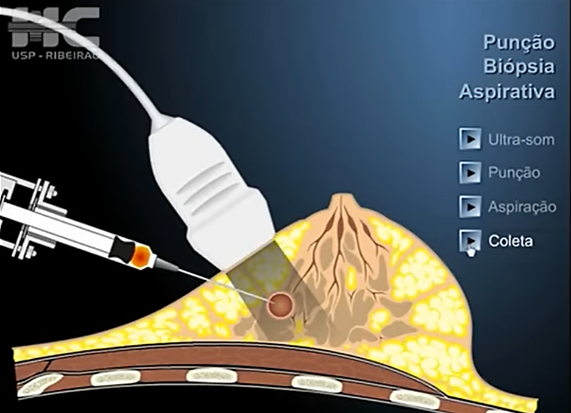

Decifrando o Câncer de Mama com Inteligência Artificial
Uma análise do processo KDD para classification de tumores usando o Weka.
Base de Dados: Breast Cancer Wisconsin (Diagnostic)
Breast Cancer (Câncer de Mama): É o tema do estudo.
Wisconsin: É a origem dos dados (coletados no Hospital da Universidade de Wisconsin, EUA).
Informações Relevantes
- Tema: Diagnóstico de tumores mamários (PAAF).
- Total de Registros: 569 instâncias (exames).
- Total de Atributos: 32 (1 ID, 1 Classe, 30 Numéricos).
- Atributo identificador:Diagnóstico M/B (Maligno / Benigno).
Proveniência e Autores
Estes dados são públicos e foram doados para fins de pesquisa em 1995.
- Fonte Principal: UCI Machine Learning Repository.
- Autores Originais: Dr. William H. Wolberg (Médico), W. Nick Street (Ph.D.) e Olvi L. Mangasarian (Ph.D.).
- Centro: Universidade de Wisconsin-Madison.
Como os Dados são Criados? (Da Célula ao Dado)
Os dados brutos não são números, e sim amostras biológicas. Um processo de 4 etapas transforma a amostra de uma paciente em uma linha na nossa base de dados.
- Coleta da Amostra PAAF( Punção Aspirativa por Agulha Fina): Milhares de células são extraídas do tumor da paciente através de um procedimento de punção.
- Digitalização: A amostra de células é tingida (para destacar os núcleos), colocada em uma lâmina de microscópio e digitalizada em uma imagem de alta resolução.
- Extração de Características: Um software de visão computacional analisa a imagem, identifica os núcleos das células e calcula 10 medidas para cada um (ex: raio, textura, área, suavidade).
- Consolidação (Dataframe): Para criar uma única linha por paciente, um resumo estatístico (média, erro padrão e o "pior" valor) é calculado para cada uma das 10 medidas, resultando nas 30 colunas de atributos que usamos.
Metodologia: O Processo KDD Passo a Passo
Para chegar à conclusão, seguimos rigorosamente as etapas do KDD (Descoberta de Conhecimento em Bases de Dados) utilizando o software Weka.
1. Seleção dos Dados
Escolhida a database `Breast Cancer Wisconsin (Diagnostic)` por sua relevância, qualidade (sem dados faltantes) e por possuir um atributo-classe claro, ideal para a tarefa de classificação.
2. Pré-processamento
Limpeza da base de dados. A única ação necessária foi a **remoção do atributo `id`**, pois ele é um identificador único sem valor preditivo, podendo "sujar" o aprendizado do modelo.
3. Transformação
Preparação dos dados para análise e melhor legibilidade:
- **Tradução de Classes:** `B` -> `Benigno` e `M` -> `Maligno`.
- **Tradução de Atributos:** Todos os 30 atributos numéricos foram traduzidos para o português (ex: `area_worst` -> `pior_area`).
- Normalização/Discretização: Não foram necessárias, pois o algoritmo J48 (árvore de decisão) lida nativamente com atributos numéricos em diferentes escalas.
4. Mineração de Dados (Data Mining)
Aplicação do algoritmo de classificação. O objetivo é encontrar padrões nos 30 atributos que levem à classe `diagnostico`.
- **Algoritmo Escolhido:** `weka.classifiers.trees.J48` (uma árvore de decisão C4.5).
5. Avaliação e Interpretação
Análise da performance do modelo gerado. Para garantir um resultado confiável e não-viciado, foi utilizado o método **10-fold Cross-validation** (Validação Cruzada de 10 pastas).
O Modelo Gerado: A Árvore de Decisão
O resultado da mineração é um modelo "white-box", ou seja, podemos ler as regras que o computador aprendeu. A árvore é podada (pruned) para evitar "overfitting" (decoreba) e ser mais generalizável.
Regras do Classificador J48 (com nomes traduzidos)
J48 pruned tree ------------------ pior_area <= 880.8 | pior_pontos_concavos <= 0.1357 | | erro_padrao_area <= 36.46: Benigno (319.0/3.0) | | erro_padrao_area > 36.46 | | | raio_medio <= 14.96 | | | | erro_padrao_textura <= 1.978: Benigno (11.0) | | | | erro_padrao_textura > 1.978 | | | | | erro_padrao_textura <= 2.239: Maligno (2.0) | | | | | erro_padrao_textura > 2.239: Benigno (3.0) | | | raio_medio > 14.96: Maligno (2.0) | pior_pontos_concavos > 0.1357 | | pior_textura <= 27.37 | | | pior_pontos_concavos <= 0.1789 | | | | erro_padrao_area <= 21.91: Benigno (12.0) | | | | erro_padrao_area > 21.91 | | | | | erro_padrao_perimetro <= 2.615: Maligno (6.0/1.0) | | | | | erro_padrao_perimetro > 2.615: Benigno (6.0) | | | pior_pontos_concavos > 0.1789: Maligno (4.0) | | pior_textura > 27.37: Maligno (21.0) pior_area > 880.8 | concavidade_media <= 0.0716 | | textura_media <= 19.54: Benigno (9.0/1.0) | | textura_media > 19.54: Maligno (10.0) | concavidade_media > 0.0716: Maligno (164.0) Number of Leaves : 13 Size of the tree : 25
Interpretação-chave: O modelo identificou o `pior_area` (a maior área do núcleo celular) como o fator decisivo mais importante para o diagnóstico.
Avaliação do Desempenho: Métricas de Sucesso
Acurácia Geral (10-fold CV)
93,32%
(531 de 569 instâncias classificadas corretamente)
Matriz de Confusão
Analisa em detalhes onde o modelo acertou e, mais importante, onde errou.
| Valor Real | Previsto: Maligno | Previsto: Benigno |
|---|---|---|
| Maligno (212) | 197 (Acerto) | 15 (Erro Grave) |
| Benigno (357) | 23 (Erro Menor) | 334 (Acerto) |
Análise Crítica: O modelo teve 15 Falsos Negativos (o erro mais perigoso) e 23 Falsos Positivos.
Métricas Detalhadas por Classe
Precision, Recall e F-Measure mostram o desempenho em cada classe.
| Classe | Precision | Recall (TP Rate) | F-Measure |
|---|---|---|---|
| Maligno | 0,895 (89,5%) | 0,929 (92,9%) | 0,912 |
| Benigno | 0,957 (95,7%) | 0,936 (93,6%) | 0,946 |
| Média Ponderada | 0,934 | 0,933 | 0,933 |
- Precision (Precisão): De todas as vezes que o modelo previu "Maligno", ele estava certo 89,5% das vezes.
- Recall (Revocação): De todos os casos que eram realmente "Malignos", o modelo conseguiu "encontrar" 92,9% deles.